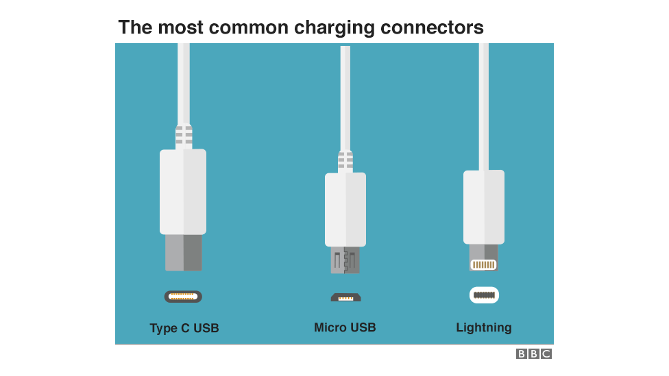
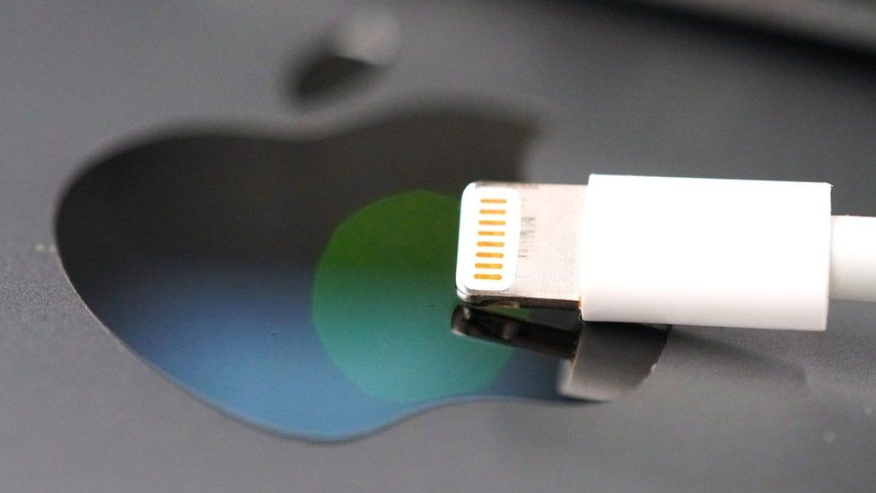

EU rules to force USB-C chargers for all phones
By Cristina Criddle
Technology reporter
Some Apple devices - such as the iPad Pro and Mac laptops - use USB-C (left) while the iPhone uses Lightning (right)
Manufacturers will be forced to create a universal charging solution for phones and small electronic devices, under a new rule proposed by the European Commission (EC).
The aim is to reduce waste by encouraging consumers to re-use existing chargers when buying a new device.
All smartphones sold in the EU must have USB-C chargers, the proposal said.
Apple has warned such a move would harm innovation.
The tech giant is the main manufacturer of smartphones using a custom charging port, as its iPhone series uses an Apple-made "Lightning" connector.
"We remain concerned that strict regulation mandating just one type of connector stifles innovation rather than encouraging it, which in turn will harm consumers in Europe and around the world," the firm told the BBC.
It added that it aims to make every Apple device and usage carbon neutral by 2030.
Most Android phones come with USB micro-B charging ports, or have already moved to the more modern USB-C standard.
New models of the iPad and MacBook use USB-C charging ports, as do high-end phone models from popular Android manufacturers such as Samsung and Huawei.
The changes would apply to the charging port on the device body, whereas the end of the cable connecting to a plug could be USB-C or USB-A.
Around half of chargers sold with mobile phones in the European Union in 2018 had a USB micro-B connector, while 29% had a USB C connector and 21% a Lightning connector, a Commission impact assessment study in 2019 found.
The proposed rules will aply to:
- Smartphones
- tablets
- cameras
- headphones
- portable speakers
- handheld video game consoles
Other products including earbuds, smart-watches and fitness trackers were not considered for technical reasons linked to size and use conditions.
The proposal also standardises fast charging speeds - meaning devices capable of fast charging will be charged at the same speeds.
Preventing waste
EU politicians have been campaigning for a common standard for over a decade, with the Commission's research estimating that disposed of and unused charging cables generate more than 11,000 tonnes of waste per year.
In the European Union, around 420 million mobile phones and other portable electronic devices were sold in the last year.
The average person owns around three mobile phone chargers, of which they use two regularly.
In 2009, there were more than 30 different chargers, whereas now most models stick to three - the USB-C, Lightning and USB micro-B
"Having one common charging standard would be a victory for common sense in the eyes of consumers," Ben Wood, an analyst at CCS Insight said.
"Although Apple has made a strong argument for keeping its Lightning connector, given the one billion active iPhone users, some of its products including Mac and iPad now support USB-C.
"Hopefully it will eventually become a non-issue if Apple keeps adding USB-C to more devices."
It may be a number of years before the proposals come into effect.
The legislative proposal, known as a Directive, will be debated by the European Parliament and national governments.
MEPs and member states may suggest amendments to the proposal. Only once the EC has agreed these amendments, will the directive be enacted.
The EC hopes that will happen in 2022 - after which member states usually have two years to enact the rules into national law, and manufacturers will have 24 months to change their charging ports.
"We gave industry plenty of time to come up with their own solutions, now time is ripe for legislative action for a common charger. This is an important win for our consumers and environment and in line with our green and digital ambitions," Commission Vice President Margrethe Vestager said.